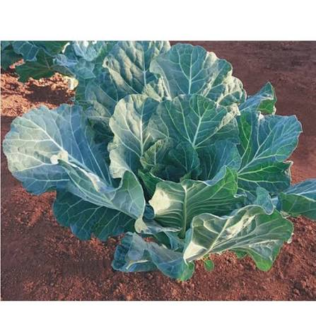

📱 Acesse esta página pelo QR Code

Escaneie o QR Code para acessar esta página pelo celular.
Horta Escolar Viva

Brassica oleracea var. acephala
A couve manteiga é uma hortaliça de folhas verdes, grandes e macias. É muito cultivada em hortas por ser resistente, nutritiva e apresentar produção contínua de folhas durante seu desenvolvimento.
A couve tem origem na região do Mediterrâneo e pertence ao grupo das brássicas. Atualmente é cultivada em diversas regiões do mundo, principalmente em locais de clima ameno.
A couve manteiga é rica em fibras, vitaminas A, C e K, cálcio, ferro e antioxidantes, contribuindo para uma alimentação saudável.
É utilizada em saladas, sucos verdes, sopas, refogados e como acompanhamento de diversos pratos tradicionais da culinária brasileira.
Seu cultivo favorece a biodiversidade da horta escolar e permite a observação do desenvolvimento das plantas, incentivando práticas agrícolas sustentáveis.
A couve manteiga pode ser colhida várias vezes, pois continua produzindo novas folhas após cada colheita.
Escaneie o QR Code para acessar esta página pelo celular.